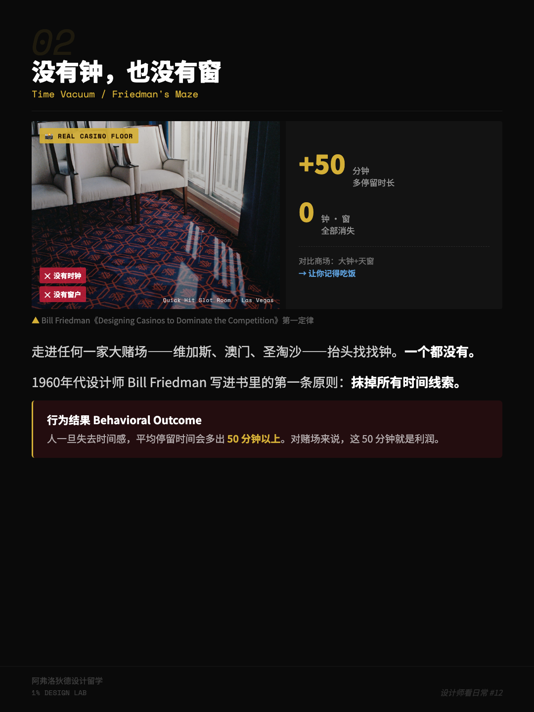
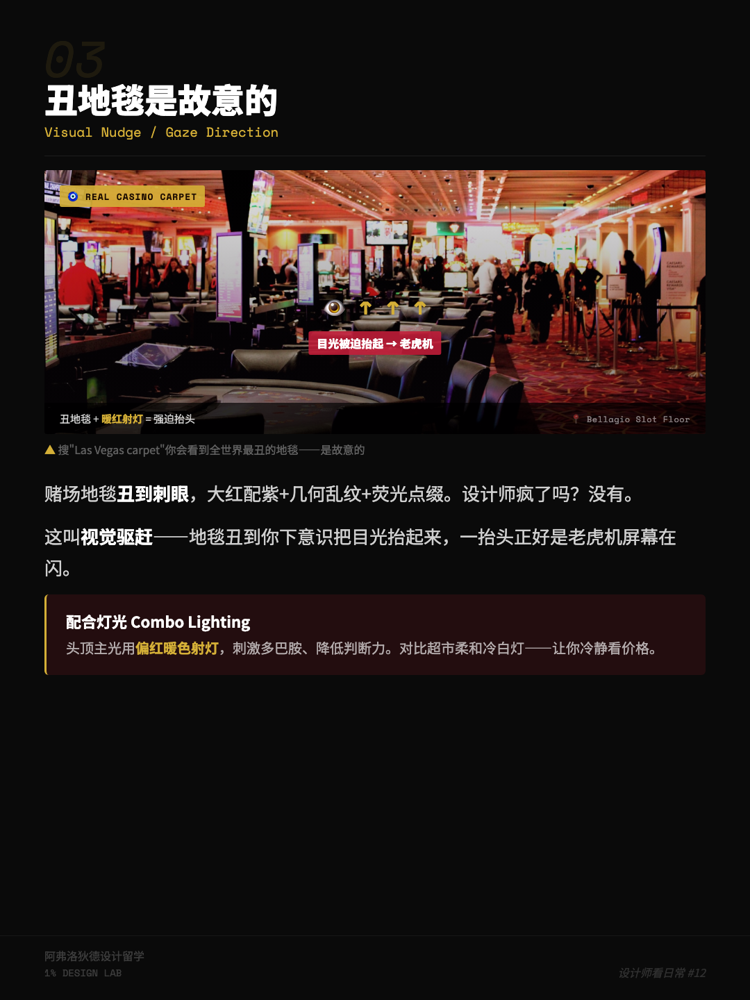
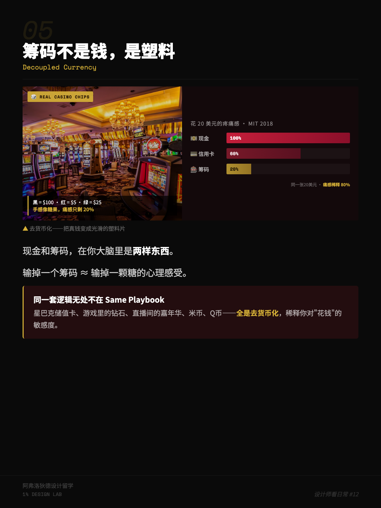

A few days ago I finished watching that Las Vegas episode by Yingshi Jufeng (影视飓风, a Chinese tech video channel). They walked into the casino carrying a million-dollar check and walked back out with it completely intact. A video like this comes along maybe once in ten years. The bullet comments were all shouting how satisfying it was, and I was the one zoning out in front of the screen.
I’m a designer. Whether they won, honestly, I don’t much care. What I care about is something else: why is it that the moment a person walks into a place like that, they can hardly bear to leave? Every meter of that space feels like it’s wrestling with human nature, and it wrestles with real method.
I sat with that curiosity for a long time. Before writing, I set myself a rule: every group of numbers in the first draft that sounded especially professional either gets traced to a source or gets deleted. The spatial psychology is real, but the moment fake precision starts carrying the show, the louder the conclusion, the emptier the foundation. I’ve stepped in that hole myself; this time I wanted to walk around it.
Stop asking “how does the casino con you out of your money.” The question to ask is another one: which instincts in you does it actually press into service, so that you voluntarily sit a while longer and bet one more time?
One. No clocks, no windows: how does time “disappear”?
Any big casino you’ve ever walked into, Las Vegas, Macau, Singapore’s Sentosa: once you’re inside, do one thing first. Look up. Find a clock.
None.
Now look for windows.
None either.
Deliberate. The designers cut no corners on this. Casino design has one unavoidable figure, Bill Friedman, who ran casinos himself and gambled himself, then wrote a very thick book, Designing Casinos to Dominate the Competition. The first rule in the book, roughly: erase every single thing that could cue time, leave not one behind.
People who lose their sense of time stay longer; almost nobody argues with that direction. But my original draft contained the line “on average stays 50+ minutes longer,” and this time I went back to check and couldn’t find a first-hand source that holds up. So now I’m honestly correcting myself: I accept the direction, I can’t produce the specific number, and you shouldn’t take it too seriously either. The logic, though, runs smooth. No windows, so you don’t know it’s dark outside. No clocks, so you don’t know how long you’ve been there. Hungry, and cheap food gets delivered to your hand; drowsy, and the lights and sounds keep propping you up. Time, the external anchor that was supposed to help you decide, gets pulled up peg by peg.
For contrast, look at IKEA, Wanda Plaza, outlet malls. These places can’t wait to tell you it’s broad daylight through glass curtain walls and skylights, and they hang big clocks in the most visible spots, terrified you might not know the time. A mall’s arithmetic runs like this: you finish buying smoothly and leave, and only then can the next customer come in. A casino wants precisely the opposite. It wants you to stay.
Casino vs. mall: same spatial problem, two opposite answers
- Mall
- Profit = how fast you finish buying and leave (the conversion-rate model). So it hangs time cues in the most prominent places, pushing you to close the deal efficiently.
- Casino
- Profit = how long you’re willing to stay (the retention-time model). So it pulls out the time cues one by one, making you forget to leave.
Two. The eye-stabbingly ugly carpet is on purpose
Go search “Las Vegas casino carpet”; the images that come up will sting your eyes raw. Red against purple, geometric lines knotted into a mess, with a stab of fluorescent color here and there.
Did the designers’ taste collectively collapse? No.
The trade has a name for it, “visual eviction”: the carpet is ugly enough that you instinctively refuse to look down at it, so your gaze has nowhere to go but up. Look up, and a whole wall of slot machines is flashing at you. Add the warm, reddish spotlights overhead, and you’re baked into a mild mania, a bit restless, unable to sit still, looking for some stimulation.
Compare a supermarket. Soft cool-white light, plain floor tiles, price tags written out plainly. That is space built to calm you down and make you read prices carefully. The casino doesn’t want you calm. It wants you staring at the screen, forgetting who you are, and, even more, forgetting how much is left in your pocket.
A word of honesty: The internet often says “red light stimulates dopamine secretion and lowers your judgment.” I’ve heard that line countless times. This time I went looking for measured data: inside one real casino, how much can that small a color-temperature difference actually shave off a person’s judgment? I haven’t seen a result that convinces me. I lean toward believing the manic atmosphere baked up by “warm light + noise + nonstop flashing” is real; as for pinning it on the exact word “dopamine,” raise an eyebrow.


Three. The cruelest trick: Near-Miss, the “almost win”
The first two tricks are about “making you stay.” This one is about “making you unable to stop.” I think it’s the most sinister.
The slot machine’s three reels spin. The first two land on cherries. The third stops one notch short of a third cherry. You lost. But your brain doesn’t see it that way. It lies to you: almost, one more spin!
Among the scholars who study gambling addiction there’s one named Robert Breen, who has followed the deepest-hooked slot-machine players over the long term. Work in this vein has indeed found that the excitement a near-miss delivers and the excitement of a real win are hard to tell apart in a person’s own subjective experience. The money is really gone, yet the emotional reward you’re handed is as full as if you had won.
Crueler still, the slot machine’s program has been tuned by hand. It deliberately raises the frequency of “one notch short” outcomes instead of being honestly random. Nevada’s gaming regulators have indeed written rules about near-misses, but the gray zone in enforcement, honestly, has always existed.
Another candid note: Breen’s research on gambling addiction is real. But that precise description circulating online, “a certain year’s brain-imaging experiment, near-identical activity in a certain region,” I went looking for the original paper and couldn’t find one that matched it seam for seam. I believe the direction; on the details, please keep your judgment.
Take it one step further. Ordinary retail posts its prices: you spend 20 yuan on a bottle of water, the water is 20 yuan, money for goods, settled. The casino does another thing entirely: it repackages every loss you take as “you nearly won.” It forcibly rewrites loss into hope.
It didn’t change the fact that you lost; it changed only how losing feels. Once loss is rewritten as hope, you’ll persuade yourself into one more round.
Four. Why a chip doesn’t feel like money
This one, I think, is the most worth copying into the notebook of everyone who builds consumer products.
Cash and chips are, in your head, genuinely two different things.
There’s a widely circulated claim: spend the same $20, and paying cash hurts most; swiping a card hurts a little less; swapped into casino chips, the hurt nearly disappears. The name given to this phenomenon is “demonetization,” diluting the pain of the moment you pay as far as possible.
The same honest caveat: That oft-cited experiment precise to “cash pain 100%, credit card 60%, chips 20%” I couldn’t trace to a first-hand source. MIT behavioral economist Drazen Prelec did study how credit cards make people spend more, and that direction is solid and checkable. But that set of percentages precise to the single digit looks more like something later hands cooked up. My advice is the same as before: trust the direction, not the numbers.
Why do chips work? What you’re gripping is a smooth, weighted, honestly rather pleasant piece of plastic. Losing a chip registers psychologically close to dropping a candy. The feeling of being emptied out as money leaves your pocket is cut off completely by that layer of plastic.
Side note: Starbucks stored-value cards, diamonds in games, the “Carnival” gifts in livestream rooms, and in-app virtual currencies are all cousins of this trick. Their common point, in one sentence: swap real money for a middle thing you can’t touch and don’t ache over.

Whenever a product makes you “top up and exchange” before you spend, it’s most likely quietly using the chip trick. Every dollar you pay out gets padded with a layer of cushion.
I brought this logic back to the products I build
Once you’ve seen the casino, the thing for product people to learn is seeing clearly the mechanics of “keeping people.” These three tricks; do they look familiar?
- Time anchors. In your product, is there a natural exit that tells the user “about time to stop”? Or is it, like a windowless casino, refreshing infinitely and forever loading the next screen?
- Near-miss effect. Lucky draws, loot boxes, that “2% until level up” on the progress bar: are you giving the user a real sense of progress, or manufacturing the itch of “one more try and I’ll make it”?
- Demonetization. Virtual coins, stored-value balances, auto-renewal: are you saving the user the friction of paying, or diluting their sense of “I am currently spending money”?
Let me say this plainly: these three knives carry no good or evil in themselves. In a chef’s hand a knife cooks; in a thief’s hand it commits a crime. The only difference lies in whether you keep the user a little longer for their good, or only to make your retention curve look nicer.
Next time you walk into any place that’s “especially good at keeping you,” ask yourself three questions
- Hunt for time anchors. Does this place have a clock? A window? Anything at all reminding you that it’s about time to go?
- Hunt for rewritten failures. When you didn’t get something, does it honestly tell you that you didn’t get it, or dress it up as “so close”?
- Hunt for middle currencies. Are you paying directly, or did you first swap your money for some token, points, or virtual coin?
Ask the three questions and you’ll find that many apps, livestream rooms, and game arcades are working from the exact same script as the casino.
- The four mechanisms in this piece (no clocks or windows, warm-light eviction, the near-miss effect, chip demonetization) are widely discussed directions in casino design and behavioral economics — not my original discoveries
- Bill Friedman’s Designing Casinos to Dominate the Competition is a real industry work; Robert Breen is a scholar who has long studied gambling addiction; Drazen Prelec has studied the effect of credit cards on the pain of paying — this direction is verifiable
- Several precise numbers in earlier versions of this piece, “stays 50 minutes longer,” “pain drops to 20%,” “red light triggers dopamine,” couldn’t be matched one-to-one to first-hand papers, and are flagged honestly in the text. The direction is credible; on the numbers, please keep your own judgment.
- This piece is not an anti-gambling sermon, still less any kind of betting advice; it just borrows this patch of floor to take apart the design mechanics of “keeping people.”